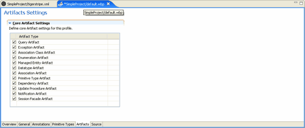

You may not want regular Tigerstripe users to have access to Query Artifacts or Notification Artifacts. In this instance, you would want to disable these options from the standard Tigerstripe Artifacts palatte that displays with Tigerstripe Workbench.

To define Artifact settings:
- Click the Artifacts tab in your Project Profile Perspective.
- Select the Artifact you want to disable. By default, all Artifact settings are enabled.
- Save your Project Profile.
Before your changes become available with your Tigerstripe project, you must deploy your Tigerstripe Profile. For more information about deploying your Tigerstripe Profile, refer to Deploying your Profile.
Profile Perspectives
The General Tab
The Annotation Tab
The Primitive-Type Tab
Deploying your Profile
Project Profiles
Rolling Back
Loading Factory Defaults

© copyright 2005, 2006, 2007 Cisco Systems, Inc. - All rights reserved